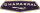

| Circuit | Date | Division Winner | ||
| Daytona | 6 February | #98 - K.Miles / L.Ruby (Shelby American Inc - Ford Mk II) | ||
| Sebring | 26 March | #1 - K.Miles / L.Ruby (Shelby American Inc - Ford X1 Roadster) | ||
| Monza | 25 April | #14 - M.Parkes / J.Surtees (SpA Ferrari SEFAC - Ferrari 330P3 Coupe) | ||
| Targa Florio | 8 May | #232 - A.Nicodemi / F.Lessona (Scuderia Sant Ambroeus - Ferrari 250LM) | ||
| Spa-Francorchamps | 22 May | #1 - M.Parkes / L.Scarfiotti (SpA Ferrari SEFAC - Ferrari 330P3) | ||
| Nürburgring | 5 June | #7 - J.Bonnier / P.Hill (Chaparral Cars Inc. - Chaparral 2D-Chevrolet) |  | |
| Le Mans | 19 June | #2 - B.McLaren / C.Amon (Shelby American Inc. - Ford Mk II) | ||